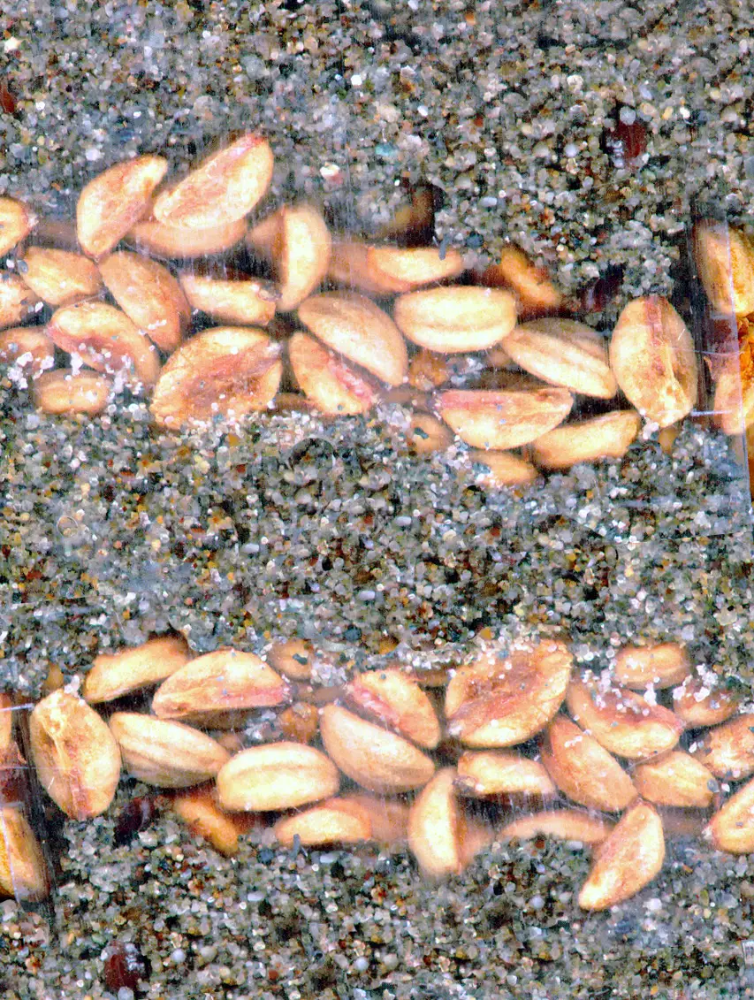

Cold Stratification Seed Bank
Teens give native seeds the winter they require: labelled jars of cold, damp weeks, logged chill, and a spring germination test that grades the bank.
Before you begin
- Ages
- 13–14
- Group
- 4–14 kids
- Time
- 40–55 min
- Where
- Indoors
- Prep
- Some prep needed

Setup
Choose the seed before you promise the bank anything, and choose it from evidence: work with the adults to list kinds whose references honestly state a cold requirement, many native flowers and perennials carry one, and copy each kind's stated weeks onto its card word for word, because the bank's whole discipline is that the cold period comes from the seed's own instructions, never from a crew member's confidence. Reject any kind whose reference is vague about the cold it needs; a bank built on guesses is a fridge full of jars. Prepare the cold beds in advance, sand or vermiculite dampened, wrung, and checked by hand, and agree the vault shelf in writing with whoever owns the fridge or the cold frame: the shelf is booked for the longest term on the list plus the test weeks, and a card on the shelf edge says what the jars are and when they may be touched, which is at the rounds and at no other time. Set the bank book's first pages up now: the intake table, the weekly round page, and the spring test's empty verdict columns, so the bank is a record from the first jar, not a memory reconstructed in spring.
Materials
- native or perennial seed that genuinely needs cold to germinate, chosen with a trusted seed supplier's or botanic reference's word on each kind (the bank's founding list, kinds whose packets or references state a cold period, with the stated weeks copied onto the bank's cards exactly)
- small jars or sealable pots, one per kind per batch, with damp sand or vermiculite as the cold bed (damp as a wrung cloth, never wet, the seed sleeps in the damp, it does not swim in it)
- labels that survive the fridge, a marker that writes on them cold, and the bank book (a hardback ledger: kind, source, date in, weeks required, date due out, and the spring test's verdict. The bank's whole memory)
- a fridge shelf or cold frame agreed with the adults in advance (the bank's vault. A shelf that will not be cleared in a tidy-up, at a cold that stays cold, for the whole stated term)
Steps
- Intake day, the framing said at the table of seed packets and empty jars: 'Cold is an ingredient, and the calendar is the recipe. Some seeds will not grow, however warm and kind the spring, until winter has passed through them. The cold is not storage, it is instruction, and these kinds are waiting for it the way a letter waits for its address to be finished. This bank gives them that winter properly: each kind in its own jar, in damp sand, labelled with its name, its source and the exact weeks its own reference demands, and entered in the book before it goes cold. Then we wait, and waiting is the work. The bank is checked weekly, briefly, by the rota, damp checked by eye, any jar that has dried re-damped by the spoonful, any jar that smells wrong reported the same day, and no jar is opened early to see how it is getting on, because a seed mid-winter cannot report, and opening the jar only warms the winter we are supposed to be keeping.' Jars are filled, labelled and entered one kind at a time, each entry read back aloud by a second crew member before the jar joins the vault. The bank's first law is that a jar and its book entry are the same fact in two places.
- The weekly round, run by the rota pair whose names head that week's page: the vault is opened once, the jars are read in book order, and each jar's state is entered in the round's plain categories, damp right, dried at the surface, too wet, suspect, with remedies applied by the book's rules and no others: a dried surface gets a spoonful of water worked in gently; a jar standing wet gets its lid rested ajar for that week only, and the book says so; a suspect jar, mould spreading beyond a spot, a smell that was not there last week, is lifted out, shown to the adult the same day, and its fate (clean seed moved to a fresh bed, or the batch honestly written off) is entered with the reason. Chill weeks are tallied per jar on the round page, counted from the intake date, so the book always knows how much winter each kind has actually had, a jar that spent a week out of the cold during a fridge failure has that week struck from its tally in the open, because the bank counts the winter the seed received, not the winter the calendar claims.
- Due-out day, when a kind's tally reaches its stated weeks: the jar comes out of the vault at the round, its entry is closed with the date and the true chill tally, and the seed moves to the test, a counted sample, never the whole batch: twenty seeds where the batch allows, laid on damp paper in a labelled tray, kept at the room's ordinary warmth, and watched. The rest of the batch is sown as the kind's reference directs, in trays, in pots, or in the ground at its season, by the crew, with the sowing entered in the book beside the intake entry, so every jar's story can be read entire: in on a date, cold for so many honest weeks, out, sown, tested. A kind whose reference asks for warmth-then-cold or a second winter is not argued with at the table; the book takes the reference's side, the jar's new card is written from the reference again, and the bank's patience is extended in writing, which is what banks are for.
- The spring test, the bank's examination: the counted trays are read on the book's stated days, first check at the reference's earliest honest date, then weekly, and germination is counted as it is defined on the intake card: a root out, not a swelling, not a hope. The count is entered as a number out of the number laid down, in the same ink whether it delights or disappoints, and the verdict page is written per kind: the percentage the test actually grew, the chill tally it grew from, and the bank's one earned sentence about that kind ('eleven weeks was enough; nine was not tried and will not be claimed'). Batches that fail entire are not hidden or quietly composted. The failure is entered, the likeliest cause is named from the book's own evidence (a dried week, a suspect jar forgiven too long, a reference followed at second hand), and the kind is either re-banked next winter with the correction written on its new card, or struck from the bank's list with its reason, in the open.
- Closing the bank's year, the shelf and the book handed on: the vault shelf is emptied, washed and released with thanks to its owner; the sown trays and pots are labelled from the book and handed to whoever will grow them on, with their kind's page copied for the grower; and the crew writes the bank's closing page together. Kinds banked, kinds proved, the test's best and worst numbers side by side, and the one instruction next winter's bankers will need most, earned at the fridge door. The tell-back is said over the closed book: 'This bank took seeds that were waiting for winter and kept that winter honestly, labelled, logged, checked weekly, and counted by the weeks the seed actually received. Spring graded us, in numbers, tray by tray, and the book holds the grades we liked and the grades we did not in the same handwriting. Cold is an ingredient. We measured it like one.' The book is stored with the empty jars and the marker where next winter's crew will find the whole bank together.
Variations
Easier: A single-kind version (a first bank or a short winter): one kind, banked entire by the full discipline, intake, weekly rounds, due-out, a counted test, because one kind banked honestly teaches the whole bank.
Harder: A cold-frame version (no fridge shelf to be had): the jars winter outdoors in a cold frame or a buried, shaded box, the rounds read a thermometer beside the jars, and the chill tally is counted in weeks the frame actually stayed cold. The book's honesty matters more outdoors, not less.
Safety
Seed is treated as what it is, a material, never a food: nothing from the bank is tasted by anyone, jars and trays are labelled BANK, NOT FOOD on the vault shelf itself, and hands are washed after every round before eating, because seed may arrive dressed or dusty from its supplier and the bank does not ask which. Only kinds from trusted suppliers or known, identified garden stock are banked. No seed is gathered from plants nobody can name, and any kind whose reference mentions toxicity is banked, if at all, in a jar marked with that fact in the adult's handwriting and handled by the rota with gloves. Damp sand and vermiculite are worked dry-handed or gloved, never blown clear and never shaken into the air of a small room; a spilled jar is swept, not breathed. The fridge rule is absolute and hygienic: bank jars live only on their agreed shelf, sealed, away from food they could touch, and a jar that has been in the bank never returns to kitchen service afterwards. Broken glass in the vault is the adult's clean-up, reported the day it is found, with the jar's seed written off in the book rather than picked through by the crew.
Inclusion notes
The bank's work is table work and book work by design, and its authority sits exactly there: the rota's reader calls each jar's state aloud while the keeper enters it, and the keeper's chair, seated, at the vault or the table, with the book, the cards and the tally, is the bank's memory and conscience, a full office held at whatever pace the keeper works. Labelling welcomes every hand: labels can be written, dictated to a scribe verbatim, or lettered from the bank's stamp set where the site keeps one, and the read-back law means no jar's truth depends on one person's handwriting or eyes. The weekly round is short, scheduled, and published a season ahead with named understudies, so no member's winter depends on never being ill, and a round missed is a round the understudy runs from the book. The book, not any person's memory, is what the next round reads. The spring test's counting can be done from photographs the rota takes of each tray, checked at the table by counters who never stood at the vault, and their counts carry the same ink: the bank grades seeds, and it does not grade its bankers.
Tried this? Rate it
Your ratings live in this browser only. Nobody else can see them. There are no community ratings here; every star on this card is yours.
Rate this activity, add a note, or write a reflection
Quick reflection
Optional, saved with your rating, and exported with "Copy my week".
Full activity card,